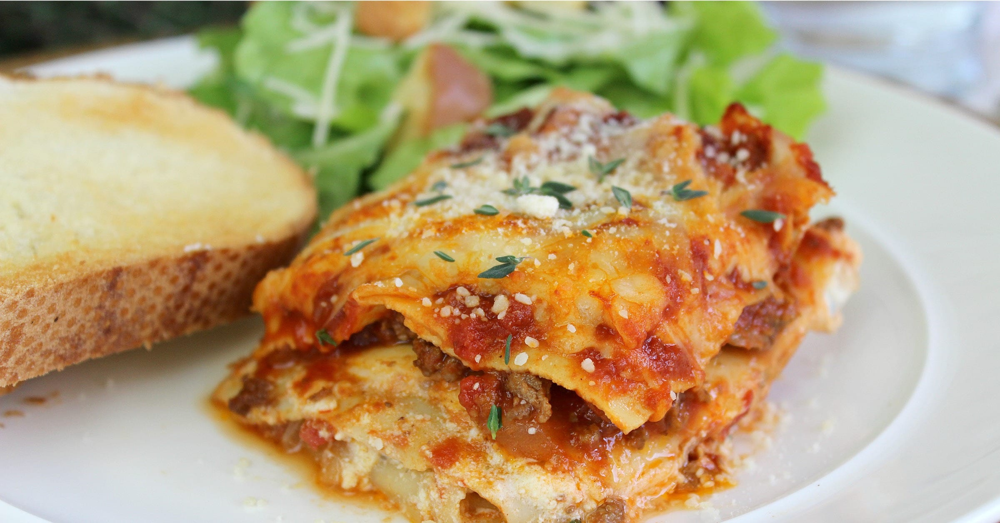

Veggy Lasagna

Description
As a vegetarian, lasagna is one of my favorite go-to meals. There are so many different variations, the possibilities are practically endless, and it is so easy to make that it is almost fool proof. Even better, it is always well-received by the family. (Because as every mom knows, any recipe that can avoid a mealtime battle is one to try!
This version uses one of my favorite stockpile staples, vegetarian protein crumbles to have that “meaty” feel without the meat, but you could just use a pound regular ground beef or ground turkey instead. (Just be sure to drain the meat before adding the tomatoes.) I also usually use the no-cook noodles because they are easier and faster, but any lasagna noodles would work (just be sure to cook them first!)
Ingredients
- 3 tablespoongs olive oil
- 1 small onion, chopped
- 1 pkg vegetarian protein crumbles
- 1,15 oz can dices tomatoes
- 1/2 teaspoon garlic power
- 1/2 tablespoon Italian seasoning
- 1/2/ teaspoon dry sage
- 8 no-cook lasagna noodles
- 1 jar spaghetti sauce
- 2 cups shredded Mozzarella cheese
Steps
- Heat olive oil in pan over medium-high heat. Saute onions until tender, about 5 minutes
- Add protein crumbles to pan. Reduce heat to medium. Saute until “meat” is browned, about 5 minutes, then add un-drained can of diced tomatoes. Cook a few minutes more, until some of the liquid is gone, then remove from heat and let cool slightly
- Mix ricotta with spices in a small bowl. Set aside
- Coat 9×9″ dish with cooking spray. Then lay 2 noodles on bottom of dish, then spread half of ricotta mixture over noodles, followed by a layer of half the “meat” mixture. Cover “meat” with 1/3 of the sauce, then another layer of noodles. Spread remaining half of ricotta over noodles, then sprinkle 1 cup of the cheese over ricotta. Cover with layer of noodles, then repeat “meat” & 1/3 jar sauce layers. Do one final layer of noodles, cover with remaining sauce, and then top with remaining cheese. Don’t worry if you do the layers differently! It doesn’t really matter and will still taste good no matter what
- Cover with foil and bake at 350 degrees for 45 minutes. Remove foil and bake 20-25 minutes more, until top is brown. Let sit for a few minutes, then enjoy!
Home